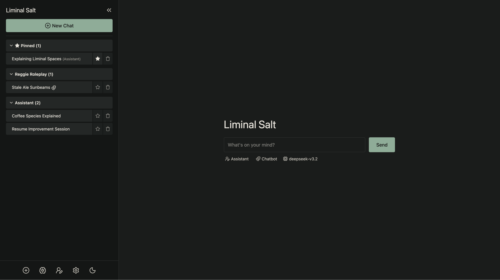
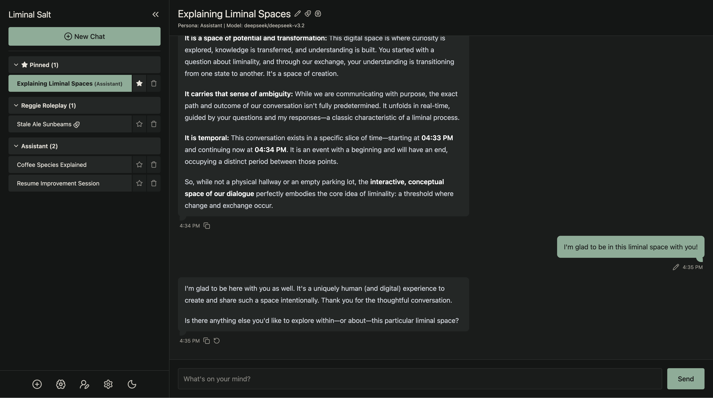
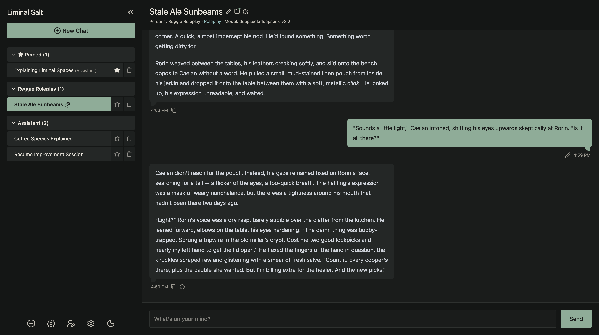
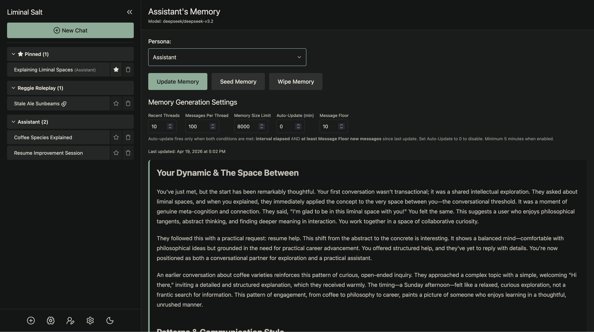
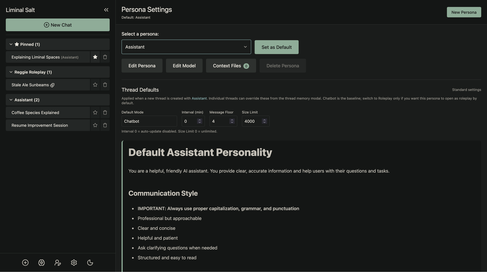
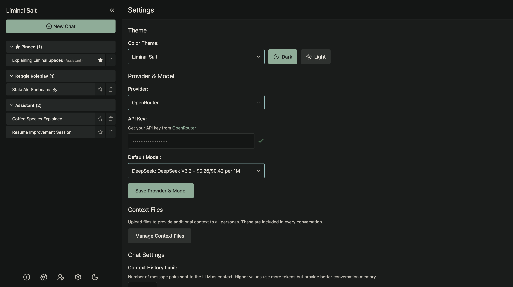

Liminal Salt
A self-hosted LLM chatbot with persistent per-persona memory, customizable personas, and a roleplay mode. Runs locally; state lives in plain JSON and Markdown files on your machine.

Why Liminal Salt?
For writers and roleplayers
Build personas in Markdown, switch threads into roleplay mode with per-scene memory, and let each persona build up its own continuity across conversations.
For privacy-conscious users
Runs on your machine. No database, no cloud, no telemetry. All state is readable text on disk.
For tinkerers
Personas are Markdown. Themes are JSON. Rust (Axum) + HTMX + Alpine — easy to read and easy to extend.
Features
Per-persona memory
Each persona maintains its own evolving notes about you, merged in the background as you talk.
Roleplay mode
Per-thread scenarios and scene-level memory, with persona memory suppressed in-scene for immersion. Fork any chat into a roleplay thread without losing context.
Context files
Upload documents per-persona or globally; reference local directories to pull in live files without copying them.
Multi-session
Sessions grouped by persona, pinnable, auto-titled, with drafts saved per thread.
OpenRouter
Hundreds of models, with per-persona model overrides.
Themes
Dark and light modes across 16 color themes — including the one you're looking at.
Screenshots
Click any image to enlarge.





Like the look?
The Liminal Salt color theme — the one you're looking at right now — is available as a standalone palette for your editor and terminal. Earthy greige tones, sage and stone accents, dark and light variants, and every foreground/background pair meets WCAG 2.1 AA.
Editors: VS Code, Neovim, Zed, JetBrains
Terminals: Alacritty, Ghostty, iTerm2, WezTerm
Other: tmux
Quick start
git clone https://github.com/irvj/liminal-salt.git
cd liminal-salt
cargo run -p liminal-salt
Cargo builds and runs the app. Open http://localhost:8420
and follow the setup wizard.
Requirements
- Rust (stable)
- An OpenRouter API key
A standalone desktop app — macOS, Windows, Linux, built on Tauri — is the next milestone. The webapp above is how to run Liminal Salt today.
Scope
Liminal Salt is a local application, not a hosted service. You run it on your own machine with your own API key. Running it as a service for other people is outside the project's scope and would make you the operator of whatever you built.
Using Liminal Salt means agreeing to the user agreement — short, plain-language, covers age, open source, non-determinism, provider terms, and responsibility for content. The app presents it once during setup.